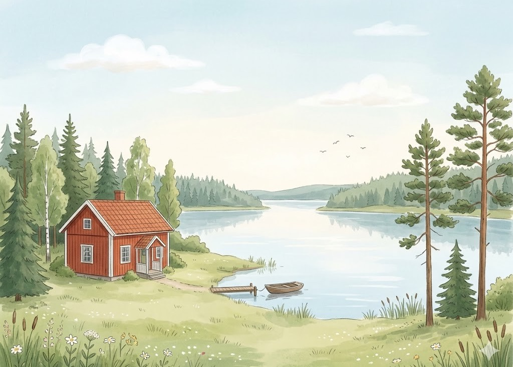
Hier stehen die wichtigsten Daten zu deinem Land. In der App baust du daraus deinen eigenen Steckbrief.
| Hauptstadt | Stockholm |
| Kontinent | Europa |
| Sprache | Schwedisch |
| Währung | Schwedische Krone |
| Einwohner | rund 10 Millionen Menschen |
| Fläche | etwa 450.000 km², das ist noch ein Stück größer als Deutschland |
| Großer Berg | Kebnekaise, 2.097 Meter hoch |
| Nachbarländer | Norwegen und Finnland, über eine lange Brücke auch Dänemark |
In Schweden gibt es viele berühmte Orte. Diese vier solltest du kennen.
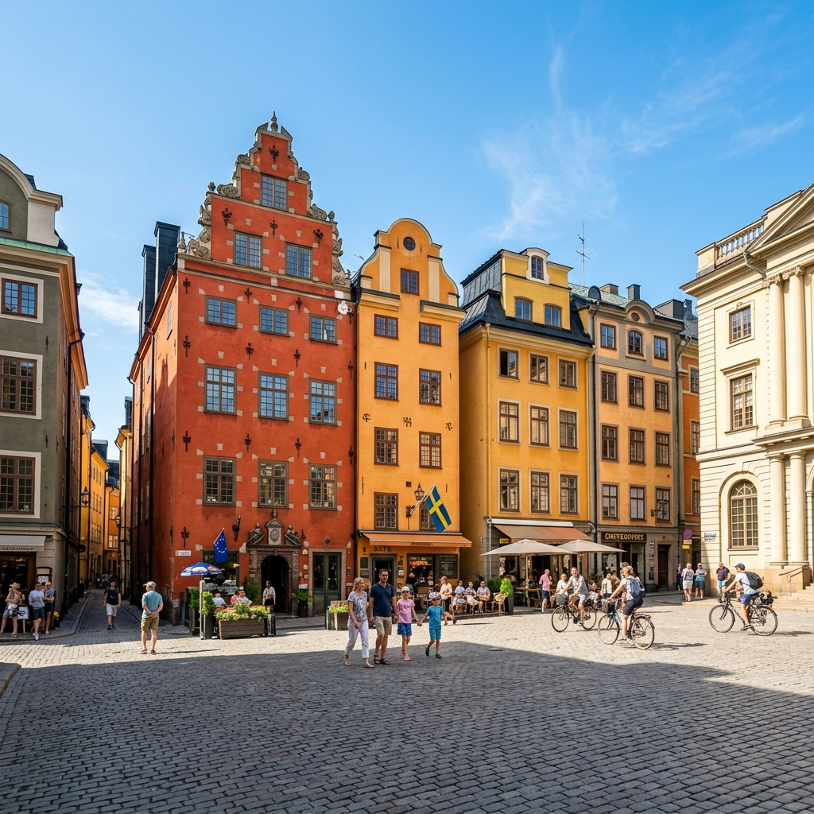
Gamla StanGamla Stan ist die Altstadt von Stockholm. Hier stehen viele bunte Häuser an engen Gassen. Auch das Schloss vom König steht in der Altstadt. Viele Menschen bummeln gern durch Gamla Stan.
Grüne Wörter für die Appdie Altstadtvon Stockholmbunte Häuserdas Schlossengen Gassen
Vasa-MuseumIm Vasa-Museum steht ein riesiges altes Segelschiff aus Holz. Das Schiff heißt Vasa und ist über 300 Jahre alt. Auf seiner ersten Fahrt ist es gleich gesunken. Später hat man es aus dem Wasser geholt.
Grüne Wörter für die Appaltes Segelschiffaus Holzheißt Vasa300 Jahregesunken
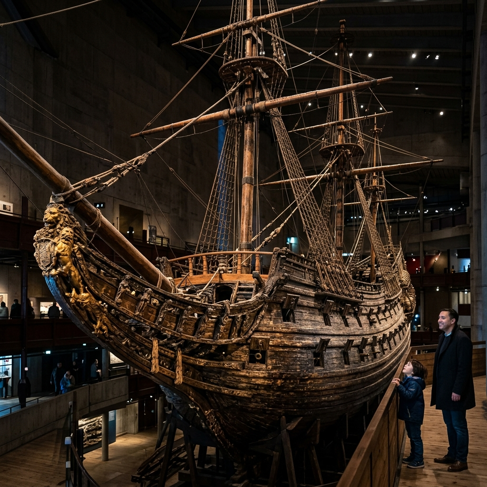
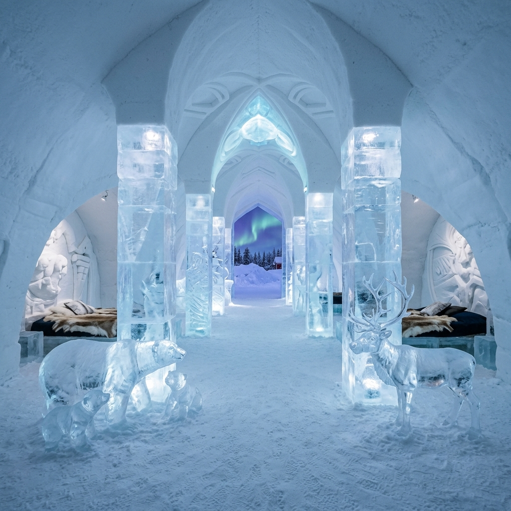
EishotelIn Nordschweden gibt es ein Hotel ganz aus Eis und Schnee. Es heißt Eishotel und wird jeden Winter neu gebaut. Sogar die Betten sind aus Eis. Im Frühling schmilzt alles wieder weg.
Grüne Wörter für die Appaus Eisund SchneeEishoteljeden Winterschmilzt
Rote HolzhäuserÜberall in Schweden stehen rote Holzhäuser mit weißen Fenstern. Oft stehen sie an einem See oder am Meer. Die rote Farbe heißt Falunrot. Viele Familien haben so ein Häuschen für die Ferien.
Grüne Wörter für die Approte Holzhäuserweißen Fensternan einem SeeFalunrotfür die Ferien
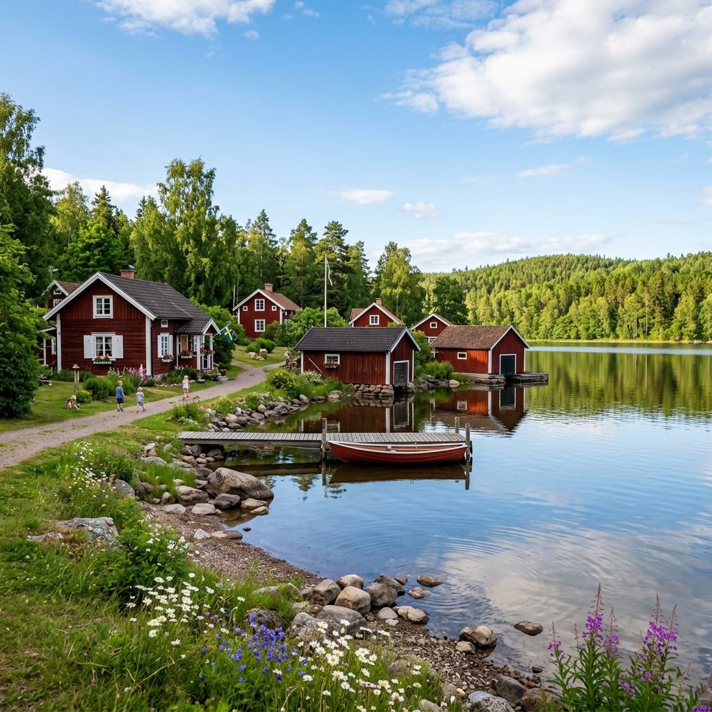
Diese Tiere leben in Schweden und sind ganz besonders.
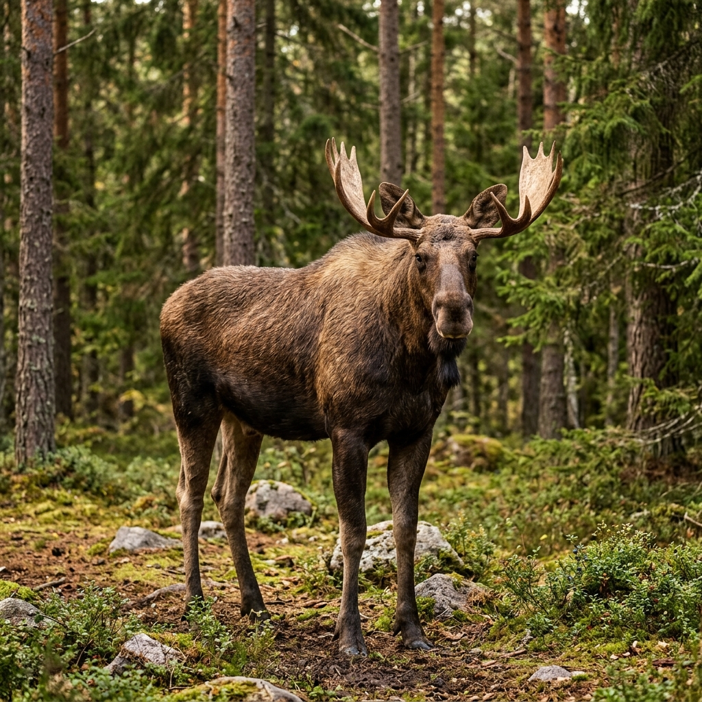
ElchDer Elch ist das größte Tier im Wald von Schweden. Er hat lange Beine und ein breites Geweih. Manche nennen ihn den König des Waldes. Der Elch frisst am liebsten Blätter, Gras und Zweige.
Grüne Wörter für die Appgrößte Tierlange Beinebreites GeweihKönig des WaldesBlätter
RentierDas Rentier lebt im hohen Norden von Schweden. Männchen und Weibchen tragen ein Geweih. Es scharrt im Winter mit den Hufen den Schnee weg und sucht Futter. Die Samen halten große Herden von Rentieren.
Grüne Wörter für die Appim hohen Nordenein Geweihim Winterden Schneegroße Herden
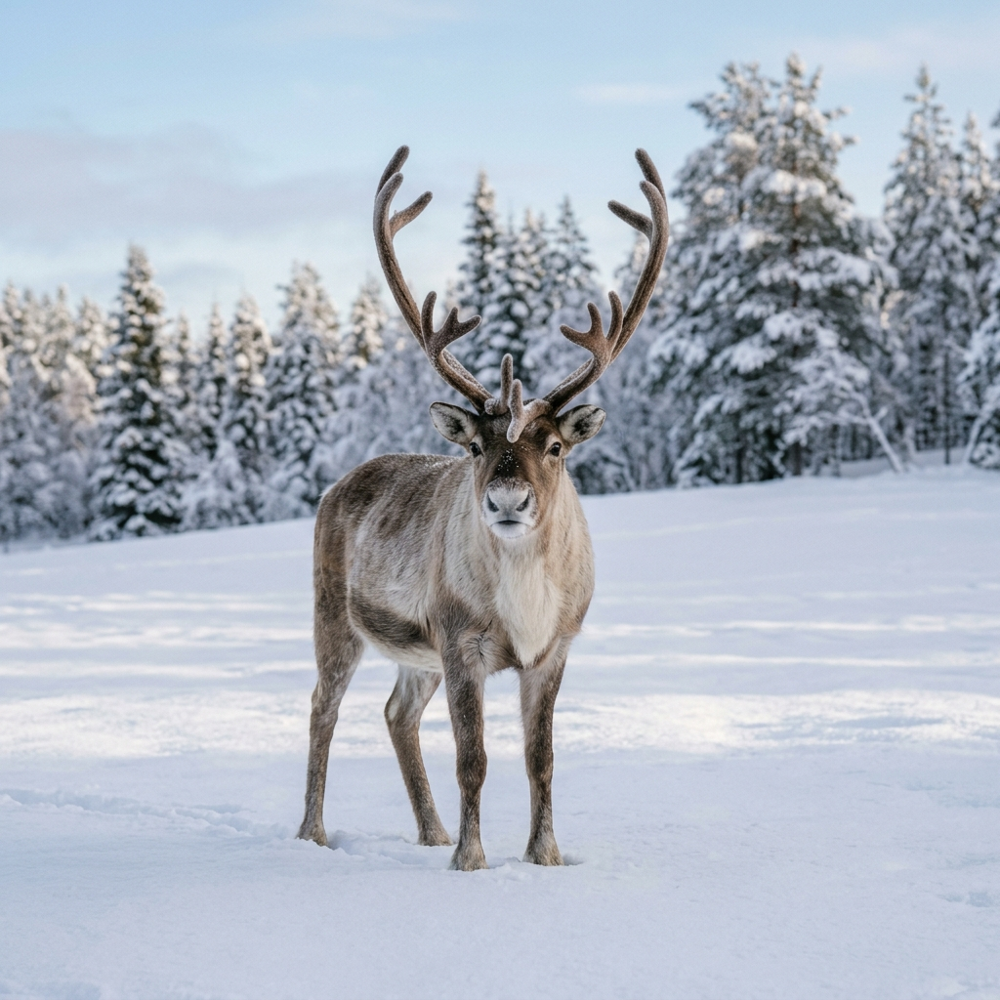
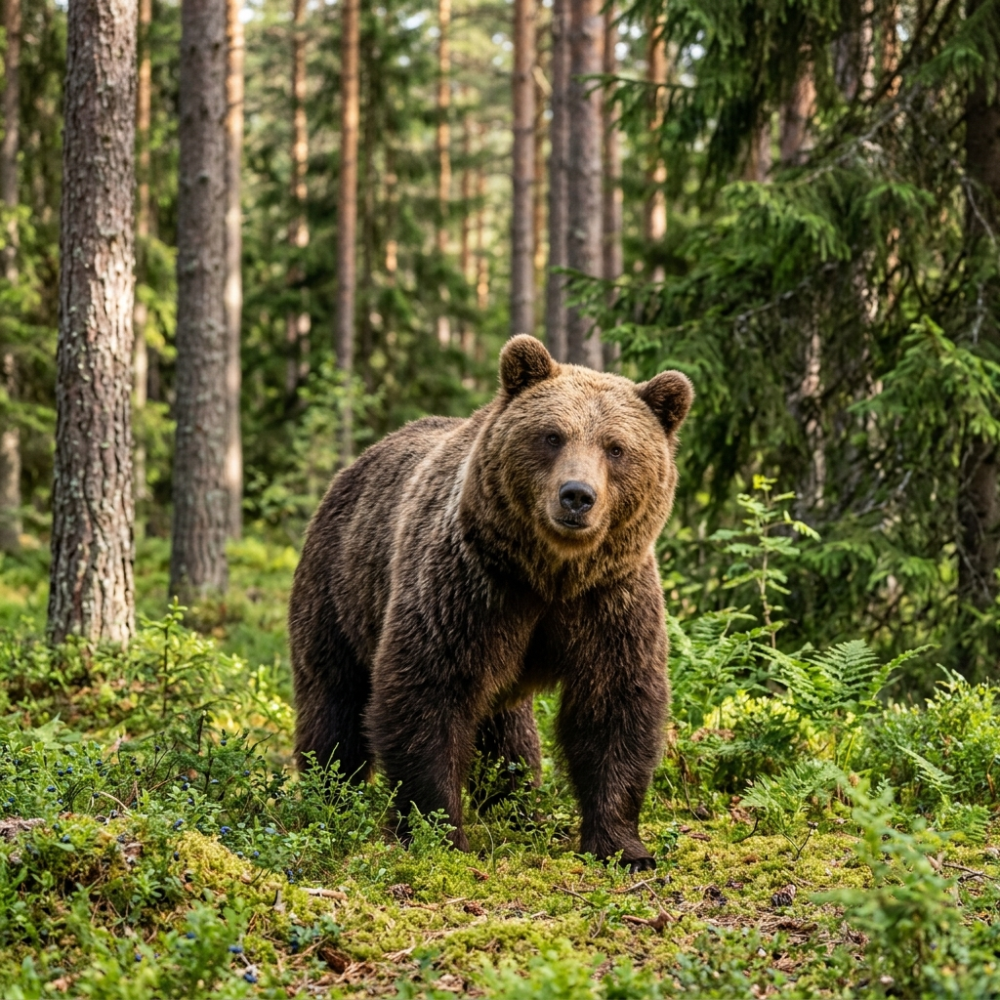
BraunbärDer Braunbär ist das stärkste Raubtier in Schweden. Er lebt versteckt in großen Wäldern. Im Winter hält der Bär einen langen Winterschlaf. Am liebsten frisst er Beeren, Fische und Honig.
Grüne Wörter für die Appstärkste Raubtiergroßen WäldernWinterschlafBeerenHonig
In der App kannst du beim Essen das Foto nehmen oder dein Gericht selbst malen.
KöttbullarKöttbullar sind kleine Fleischbällchen aus Schweden. Dazu gibt es Kartoffelbrei und rote Soße. Ganz wichtig ist süße Marmelade aus Preiselbeeren. Viele Kinder essen Köttbullar sehr gern.
Grüne Wörter für die Appkleine FleischbällchenKartoffelbreirote SoßePreiselbeerensehr gern
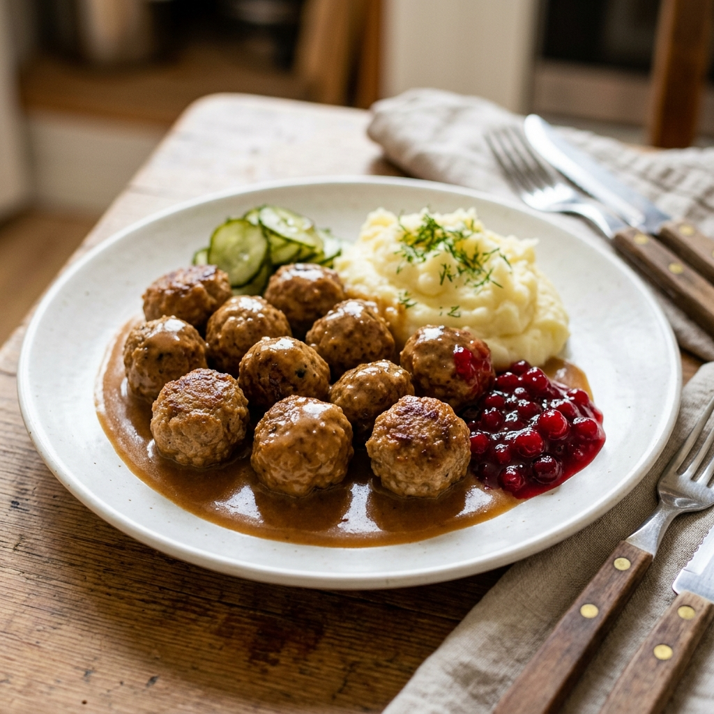
KanelbulleEine Kanelbulle ist eine süße Zimtschnecke. Der Teig wird mit Zucker und Zimt gerollt. Oben liegen kleine weiße Zuckerperlen. In Schweden isst man sie gern zu einer Pause mit Saft oder Kakao.
Grüne Wörter für die Appsüße ZimtschneckeZucker und ZimtgerolltZuckerperlenzu einer Pause
KnäckebrotKnäckebrot ist ein hartes, knuspriges Brot. Es ist flach und hat oft ein Loch in der Mitte. Man kann es lange aufbewahren. Viele Schweden essen es mit Butter und Käse.
Grüne Wörter für die Appknuspriges Brotflachein LochaufbewahrenButter und Käse
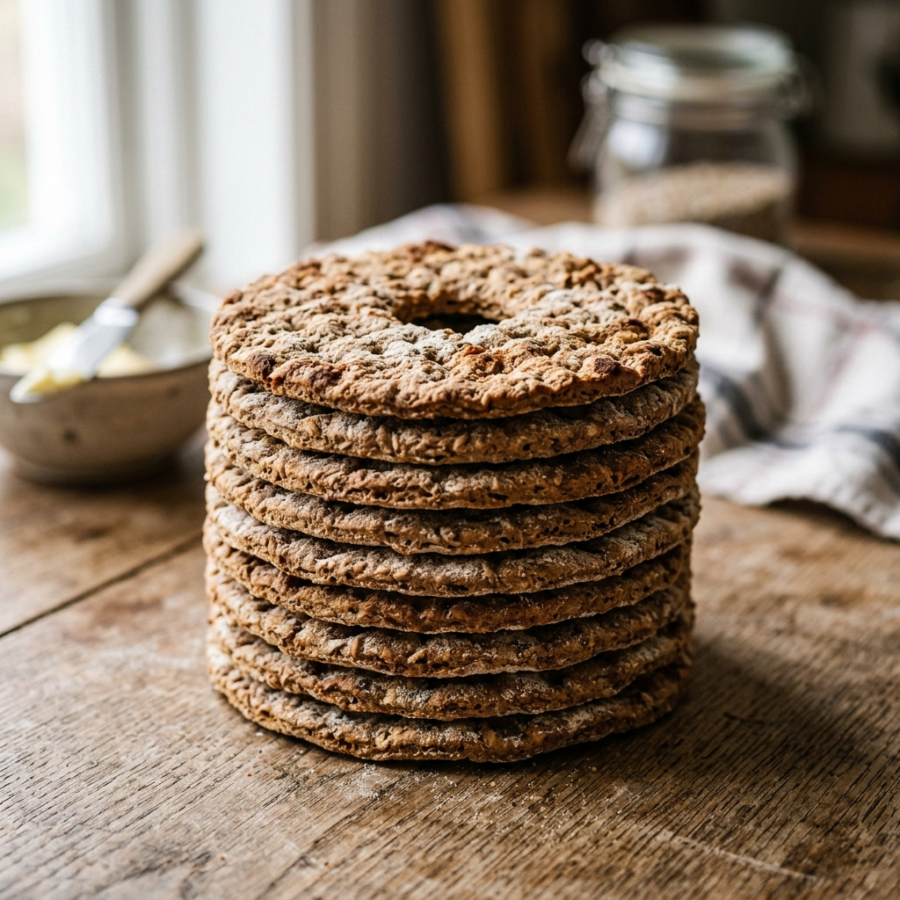
⚽ Gut zu wissen
Die schwedische Nationalmannschaft heißt Blågult, das bedeutet blau-gelb. Die Spieler tragen ein gelbes Trikot mit blauen Hosen. Diese Farben kommen von der Flagge von Schweden. Berühmt ist der Stürmer Zlatan Ibrahimović. Fußball ist der beliebteste Sport im Land.
Grüne Wörter für die AppBlågultgelbes Trikotvon der FlaggeZlatanbeliebteste Sport
🌟 Profi-Wissen
Zlatan Ibrahimović ist der bekannteste schwedische Fußballer aller Zeiten. Er hat für viele berühmte Vereine gespielt, darunter PSG, Manchester United und AC Mailand. Er ist bekannt für spektakuläre Tore, zum Beispiel einen Fallrückzieher aus großer Entfernung.
Grüne Wörter für die AppZlatan IbrahimovićSuperstarPSGManchester UnitedFallrückzieher-König
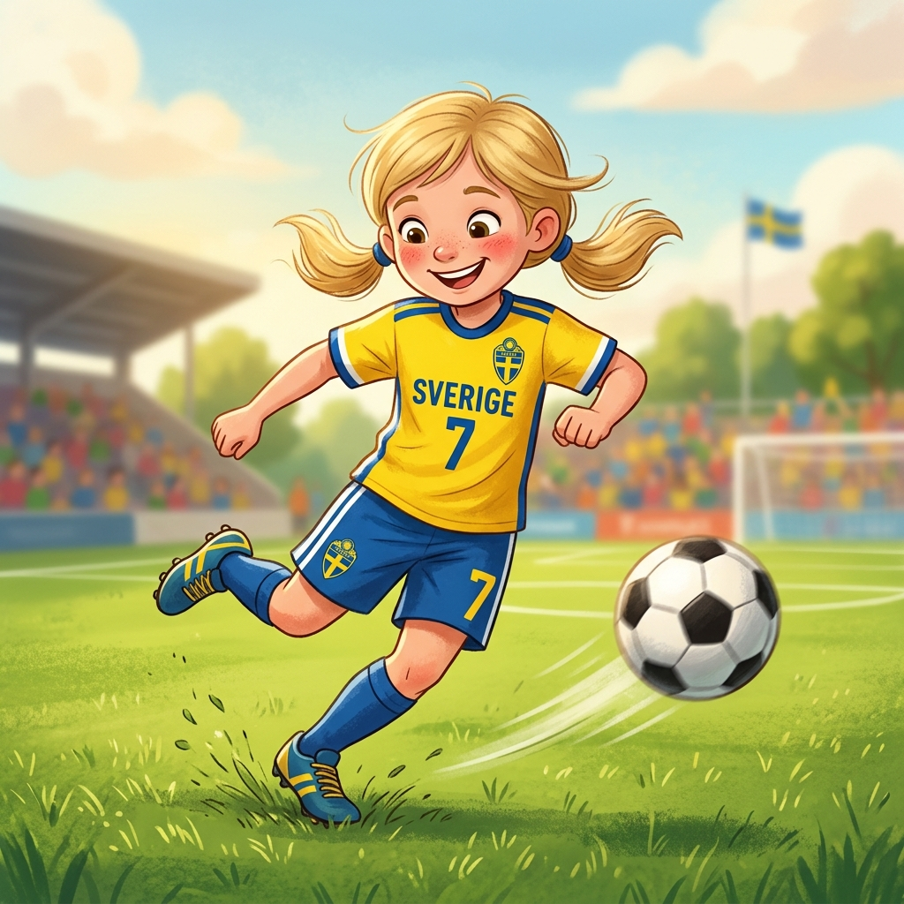
Schule in SchwedenIn Schweden beginnen die Kinder die Schule erst mit sieben Jahren. Vorher gehen viele in eine Vorschule. In der Schule essen alle zusammen ein warmes Mittagessen. Das Essen ist für die Kinder kostenlos.
Grüne Wörter für die Appmit sieben Jahreneine Vorschulewarmes Mittagessenzusammenkostenlos
MittsommerfestMittsommer ist das größte Sommerfest in Schweden. Es wird gefeiert, wenn die Tage am längsten sind. Die Kinder tragen einen Kranz aus Blumen im Haar. Alle tanzen zusammen um einen geschmückten Mittsommerbaum.
Grüne Wörter für die Appgrößte Sommerfestam längstenKranz aus BlumentanzenMittsommerbaum
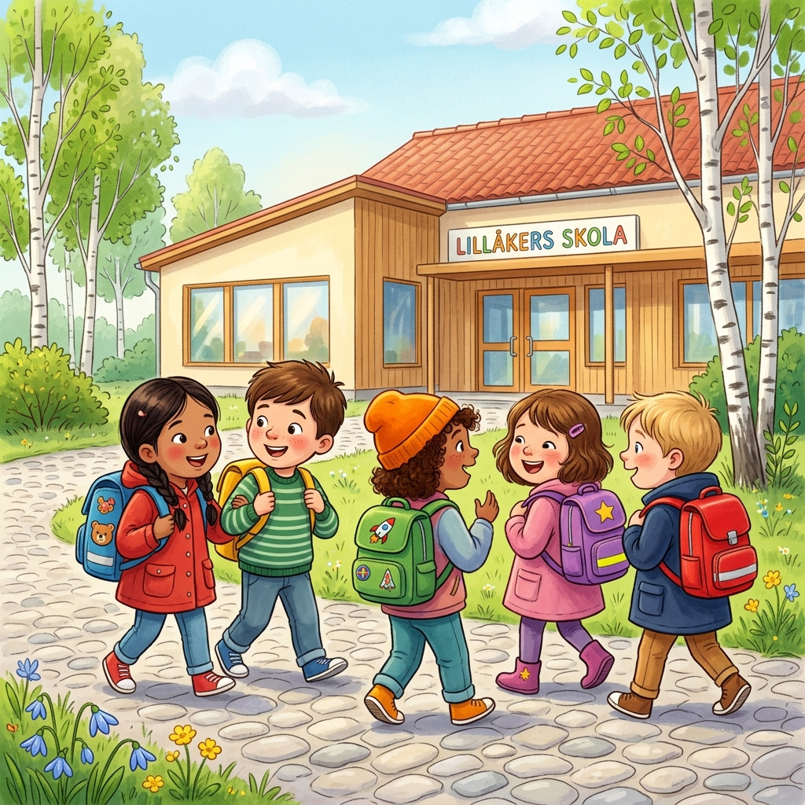